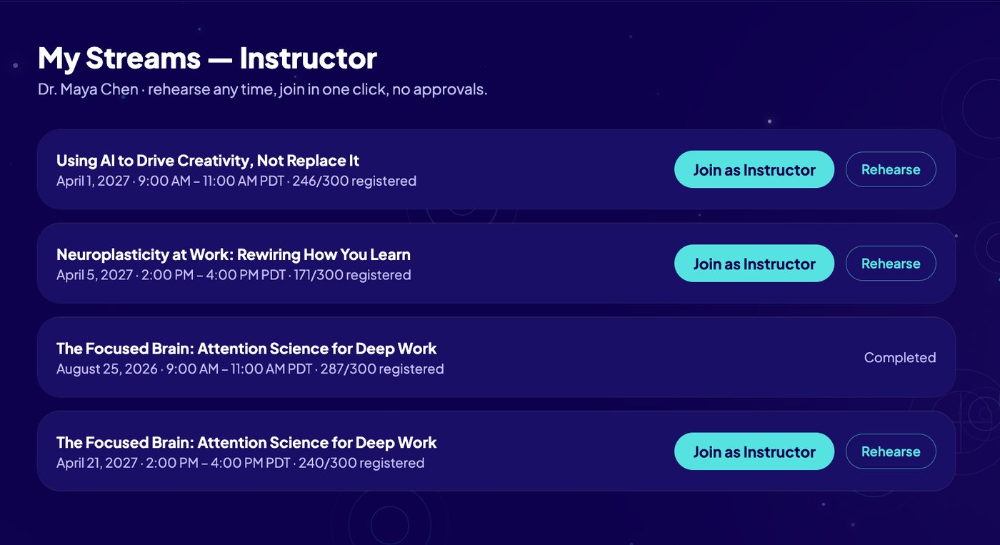

Virtual Education Streaming Platform
As learners modernize, so must the systems upon which we rely. After evaluating the off-the-shelf LMS platforms that make up the industry standard, I designed a purpose-built alternative matched to a defined use case. The result is a comprehensive digital learning environment prototype with a consumer-grade front end, unified single sign-on across roles, zero-friction navigation, integrated performance tracking and personal learning portfolio management for admins, learners and instructors alike.